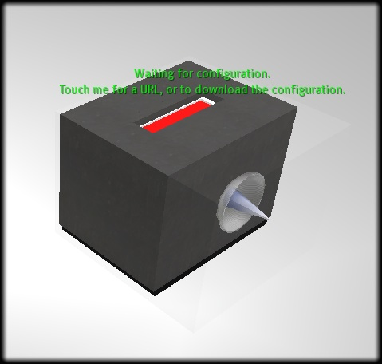

| This Sloodle article is a stub. You could help by expanding it. |
What is it?

{kind=link}
SLOODLE Prim Drop
PrimDrop is a utility instructors can use so that Second Life students can submit assignments in Second Life to a Sloodle Website.
Set up
- First, the instructor must create an assigment on their Moodle website
- Next, click on the sloodle controller, and generate a notecard for the PrimDrop and the assignment created
- Copy the generated text into a notecard in SL called sloodle_config.
- Drag a new PrimDrop object into SL from your SL inventory
- Drag the sloodle_config notecard into the PrimDrop object in SL
Student Use - assignment submission
- To submit an assignment, a student must create an object in Second Life.
- The student must set the permissions of the object to "copy/Transfer". The student can do this by right using the edit window when the object is rezzed, or after it's been taken into inventory by right clicking the object in inventory and selecting "properties"
- The student then clicks on the PrimDrop object and selects "Submit" from the blue menu that appears
- The student then control drags the object from their inventory onto the PrimDrop (it will turn red)
If successful, the submitted object will appear on the Moodle site as submitted.
For example, the instructor first creates an assignment in their moodle course. They then click on the Sloodle Controller, and generate a notecard for the primDrop object for the assignment they created.
Then in SL, the instructor drags a Prim Drop object into SL, and creates a notecard and copies the generated settings into it, then place
| This page is part of the SLOODLE documentation | |||
|---|---|---|---|
| Docs: Users | Administrators | Developers | |||
| Document Top Sloodle.org | |||